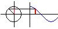

Sine Function Box
Cosine Function Box
Tangent Function Box
The graph of y=sin x

The graph of y=cos x
Graph of y=sin ax
Graph of y=A sin (Bx+C)
Graph of y=sin x + cos x
Fourier Series
sin t = a
cos t = a
sin(A+B)
sin t > a (1)
sin t > a (2)
cos t > a (1)
cos t > a (2)
cosine engine
a sin x + b cos x
The Law of Cosines(1)
The graph of y=tan t
Law of Sines
Ferris Wheel
Six Trig Functions
Crane
The Law of Cosines(2)
Information of Products